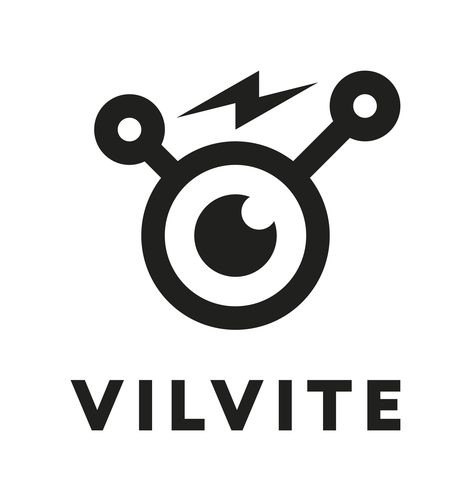
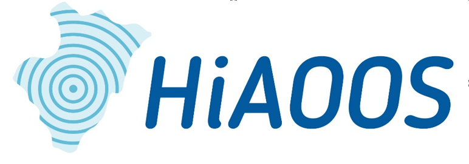

16–17 October 2026
Explore the fascinating world of underwater sound through science, art and hands-on activities. Join researchers and artists to discover how sound helps us understand the Arctic Ocean and environmental change.
Science and art presentations
Venue: Bergen Assembly
Bli med å utforske og lytte til lydene i havet.
Venue: VilVite
Address:
Halfdan Kjerulfs gate 4, 5017 Bergen
Address:
Thormøhlens Gate 51, 5006 Bergen
Hør etter! Polhavet kaller is a two-day public outreach event designed to bring the fascinating and often unknown world of underwater sound closer to the public.
The event takes place across two venues in Bergen. On 16 October at Bergen Assembly, the programme combines accessible scientific talks, sound performances, and art presentations inspired by the underwater soundscape of the ocean. On 17 October at VilVite, the programme offers family-friendly activities, interactive demonstrations, and opportunities to explore what happens in the ocean from the deep sea to the surface. Visitors will learn how scientists "listen" to the ocean and discover how underwater sound helps researchers understand marine life, environmental changes, and the polar regions.
The overall goal is to spark curiosity and share knowledge about why and how researchers study underwater sound, and what these sounds can reveal about environmental change in the Arctic and beyond.
Underwater acoustics is one of the most powerful tools for exploring remote and ice-covered oceans, strongly transdisciplinary and adopted by scientists to understand what occurs under the seabed (seismology), the distribution and behaviour of marine organisms (biology), climate processes (oceanography), and the impacts of human activity (policies and conservation).
By inviting people of all ages to listen, learn, and interact, the event aims to make the "unknown" of the underwater soundscape both tangible and exciting, sharing real experiences of ocean exploration.
Admission: Free at Bergen Assembly
Registration: Not needed
Hør etter! Polhavet kaller is supported by UiB Ocean strategic funds for marine cooperation (2026).
More information about UiB Ocean: UiB Ocean

